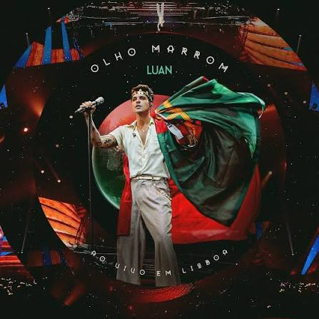
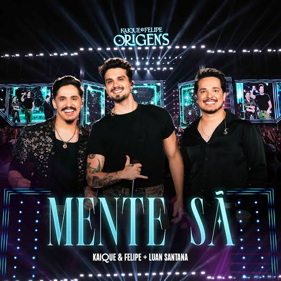
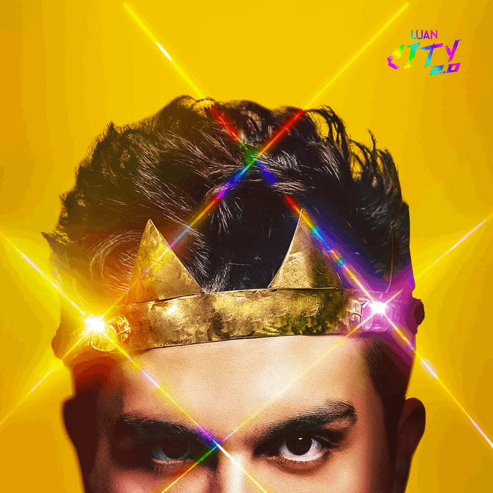
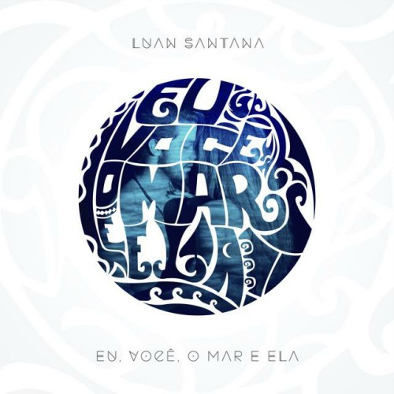

Luan Santana

Luan Rafael Domingos Santana, nascido em 13 de março de 1991 em Campo Grande, Mato Grosso do Sul, é um dos maiores nomes da música brasileira contemporânea, atuando como cantor, compositor e apresentador. Com uma carreira que mescla o sertanejo, a bachata e o pop, Luan conquistou o Brasil com seu talento precoce e carisma inquestionável.
Infância
A história de Luan com a música começou muito cedo. Aos três anos de idade, em sua cidade natal, ele já chamava a atenção da família ao cantar clássicos sertanejos como "Muda de Vida", "Chico Mineiro" e "Cabocla Tereza" com afinação impressionante. Seu pai, Amarildo Aparecido de Santana, percebeu o talento do filho e o presenteou com um violão para incentivar o aprendizado do instrumento, que se tornou seu companheiro inseparável. Devido ao trabalho de seu pai em um banco, Luan viveu em diversas cidades durante a infância, como Maringá, Manaus e Ponta Porã. Um detalhe curioso sobre sua história particular é a origem de seu nome: sua mãe, Marizete Cristina, inspirou-se no nome do filho da cantora Elba Ramalho (Luã), mas decidiu acrescentar a letra "N" no lugar do acento.
Inicio da carreira musical
Aos 14 anos, por insistência de amigos e familiares, Luan realizou sua primeira gravação durante uma festa na cidade de Jaraguari (MS). A música principal daquele dia era "Falando Sério", que se tornou marca registrada em suas apresentações amadoras. Sua estreia oficial nos palcos aconteceu em 11 de agosto de 2007, na cidade de Bela Vista (MS). Naquela época, Luan ainda não era um profissional e sequer tinha gravado em estúdio, mas o sucesso de suas músicas nas rádios locais — impulsionado por um admirador que postou suas gravações amadoras no YouTube — já garantia uma agenda lotada.
Explosão nacional
O estrelato definitivo veio em 2009 com o lançamento do álbum independente Tô de Cara e, principalmente, com a canção "Meteoro", que se tornou um dos maiores hits do país. No final daquele ano, ele lançou seu primeiro álbum ao vivo, Luan Santana Ao Vivo, gravado em Campo Grande, que o consagrou como o maior vendedor de discos do Brasil em 2010. Desde então, Luan acumulou recordes e prêmios, incluindo indicações ao Grammy Latino e múltiplas vitórias no prêmio "Melhores do Ano" e no "Prêmio Multishow". Ele é reconhecido como o artista que mais vezes atingiu o topo da parada Hot 100 Airplay da Billboard Brasil.
Carreira como astro
| Data | Acontecimentos Importantes |
|---|---|
| 2012 | Lançou Quando Chega a Noite, com uma marca mais autoral. |
| 2013 | Gravou O Nosso Tempo É Hoje, focado em uma estética mais moderna. |
| 2015 | Resgatou a sonoridade dos anos 60 com o DVD Acústico. |
| 2016 | Homenageou as mulheres no álbum 1977, com participações de grandes artistas como Ivete Sangalo e Marília Mendonça. |
| 2021 | Iniciou a era Luan City em 2022, 1 ano após assinar com a Sony Music focando em sua carreira internacional. |
| 2025 | Atualmente, o cantor dedica-se à turnê Registro Histórico, celebrando mais de 15 anos de carreira com grandes shows em estádios como o Allianz Parque. |
Vida pessoal
| Tipo | Curiosidades |
|---|---|
| Familia e relacionamento | Luan é casado com Jade Magalhães (cerimônia realizada em 2024), com quem mantém uma relação de longa data, e tem uma filha. |
| Futebol | Além da música, Luan é um grande torcedor do Corinthians. |
| Residência | Em 2011, ele adquiriu uma mansão em Londrina (PR), onde reside com sua família. |
| Religiosidade | O cantor é católico e já se apresentou para o Papa Francisco na Jornada Mundial da Juventude, em 2013, cantando para 3 milhões de pessoas na Praia de Copacabana. |
Musicas mais ouvidas
| Capa | Nome | Link |
|---|---|---|
 |
Olho Marrom | Clique aqui para ouvir |
 |
Mente Sã | Clique aqui para ouvir |
 |
Meio termo | Clique aqui para ouvir |
 |
Eu, Você, o Mar e Ela | Clique aqui para ouvir |